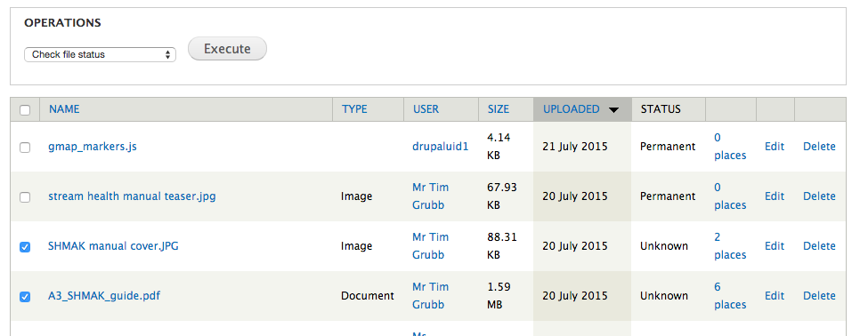

To get better visibility of the state of your media library (files directory), it can help to check individual file status.
The method described here is mostly relevant if you are already using the requirements described below. EG, if you are already using Media Suite.
We will ignore the file_checker report ( /admin/reports/file_checker ) and use admin_views and VBO instead. I think the file_checker report was built for sites that don't use file_entity (or even views!) so it's reasonably self-contained. We will leverage a bigger toolset though..
You should now be able to see a 'Status' column in the/admin/content/file view now. For those items that are 'Unknown' use VBO here, and run the 'Check file status' action.
You could also use the original file_checker tool at /admin/config/system/file_checker.
You now have an audit page that will tell you about which - if any - files on your system appear to be lost.
Given the previous setup, the real job is now to fix the issue.
Repairs can be done by following a set of heuristics:
If you think the missing files are just in a mis-named folder, provide the path to that folder, and the system will look there to see if the lost file can be found.
When searching inside that folder, we will try the most specific possibly-matching path fragment first, then chop it off and try scanning again.
EG,
to search for a missing file news/2013/DSC3001.JPG
Given search paths:
public:// & /var/backups/websitefiles/
Candidates will be, in order:
public://news/2013/DSC3001.JPG
public://2013/DSC3001.JPG
public://DSC3001.JPG
/var/backups/websitefiles/news/2013/DSC3001.JPG'
/var/backups/websitefiles/2013/DSC3001.JPG'
/var/backups/websitefiles/DSC3001.JPG'